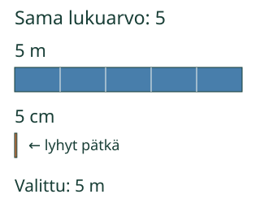

<link rel="stylesheet" href="lesson.css" />


<section data-teaching-step="1" data-lesson-role="teaching-step">
<section class="lesson-intro"><h2>Viisi mitä?</h2><p>Loikka saa lapun: “Nauhan pituus on 5.” Pitäisikö ottaa lyhyt pätkä vai pitkä nauha?</p><p><strong>Yksikkö kertoo mittauksen vertailun.</strong></p></section>
</section>


<section>


<section data-teaching-step="2" data-lesson-role="teaching-step">
<h2>Sama luku voi tarkoittaa eri pituutta</h2><p>Senttimetri ja metri ovat eri kokoiset pituusyksiköt. <strong>1 m = 100 cm.</strong> Viisi metriä on sata kertaa niin pitkä kuin viisi senttimetriä. Pelkkä luku 5 ei siis riitä tässä.</p><figure data-lesson-role="worked-example"><figcaption>5 m ja 5 cm ovat eri pituuksia. Yksikkö ei ole irrallinen koriste luvun perässä.</figcaption></figure>
</section>


<section data-teaching-step="3" data-lesson-role="teaching-step">
<h3>Toinen esimerkki: ajan merkintä</h3><p>Annettu mittaus on <strong>t = 40 s</strong>. Tässä t tarkoittaa kestoa, 40 on lukuarvo ja s on yksikkö sekunti. 40 minuuttia olisi eri kesto.</p>
</section>


<section data-teaching-step="4" data-lesson-role="teaching-step">
<p data-lesson-role="question"><strong>Mieti:</strong> voiko 5 m vaihtua 5 cm:ksi muuttamatta pituutta?</p><details data-lesson-role="answer"><summary>Katso ajatus</summary><p>Ei. Saman viiden metrin nauhan merkintä senttimetreinä on 500 cm. Kun yksikkö vaihtuu, myös lukuarvo pitää tarkistaa.</p></details>
</section>


</section>


<section>
<section data-teaching-step="5" data-lesson-role="teaching-step">
<section><h2>Vertaa ja kokeile</h2><p>Aluksi malli vertaa lukua 5 kahdessa yksikössä. Valitse sitten “Pidä sama nauha”: kuva ei muutu, vain merkintä vaihtuu. Lukuarvot annetaan valmiina.</p><p><a href="#mallin-ohjaus">Palaa mallin ja harjoituksen ohjaukseen</a>. Avaa siellä tarvittaessa valinnainen malli tai mallin valinnat.</p></section>
</section>

<section data-teaching-step="6" data-lesson-role="teaching-step">
<section><div data-unit-concept id="mallin-ohjaus"><p>Ratkaise annetun tuloksen tehtävä. Malli on valinnaista tukea.</p></div><noscript data-lesson-role="metadata"><p>Vertaa paperilla 5 m ja 5 cm. Saman nauhan kaksi merkintää ovat 5 m ja 500 cm. Kestomerkinnän 40 s yksikkö on s.</p></noscript><details data-lesson-role="hint"><summary>Apua</summary><p>Kysy ensin, mitä suuretta tarkoitetaan. m, cm ja km ovat pituuden yksiköitä; kg ja g massan; s, min ja h keston. Lämpötilalle käyvät esimerkiksi °C ja K. Jos luet annettua merkintää, säilytä juuri siinä oleva yksikkö.</p></details></section>
</section>
</section>


<section data-teaching-step="7" data-lesson-role="teaching-step">
<section><h2>Uusi tilanne: reittilappu</h2><p>Reitin pituudeksi on kirjoitettu <strong>3 km</strong>. Yksikkö on km eli kilometri. Pelkkä “3” kadottaisi tiedon mittakaavasta.</p></section>
</section>


<section data-teaching-step="8" data-lesson-role="teaching-step">
<details data-lesson-role="teaching-step"><summary>Lisäksi: yksi suure, useita yksiköitä</summary><p>Massaa voi ilmaista sekä grammoina että kilogrammoina. Yhtä ainoaa sallittua massan yksikköä ei ole. Saman massan lukuarvo on kuitenkin eri näissä yksiköissä.</p></details>
</section>


<details class="teacher" data-lesson-role="teacher-note"><summary>Opettajalle: vertailu ja rajat</summary><p>Vuosiluokat 7–9. Vaadittu PHY79-QTY-CONCEPT; M-MEAS-01 ja M-NUM-14 ovat vahvaa tukea. Muunnoskerroin ja vaihtoehtoiset lukuarvot annetaan. Kyse ei ole yksikkömuunnosten hallinnan arvioinnista. Taulukon lähteet nimeävät käyttämänsä yksikön, joten puuttuvaa yksikköä ei arvata pelkästä “järkevästä koosta”.</p><p>Mallissa erotetaan kaksi kysymystä: sama lukuarvo eri yksiköillä muuttaa pituuden, mutta sama fyysinen pituus voidaan ilmaista eri lukuarvoilla ja yksiköillä. Kuvan koordinaatit noudattavat suhdetta 100; kuva ei ole fyysisesti kalibroitu mittaväline. Yksiköksi kelpaavan vaihtoehdon tehtävä hyväksyy kaikki tarjolla olevat saman suurelajin yksiköt, ei vain yhtä suosikkia.</p><p>Yksikkö ei yksin aina määritä suuretta. Lisäksi yksikön 1 tunnus jätetään usein pois, esimerkiksi taitekertoimen merkinnästä. Siksi “kaikissa suureissa pitää näkyä yksikkömerkki” olisi liian laaja sääntö. °C ja K sopivat suurelajiin, mutta sama lämpötila ei yleensä saa samaa lukuarvoa kummassakin.</p><p>Offline: vertaa aikuisen kanssa 5 cm ja 5 m mittanauhalla. Kirjoita sama mitattu pituus kahdella annetulla tavalla ja tarkista, muuttuiko esine vai merkintä. Ruudun valinnat eivät osoita fyysistä mittaamista, itsenäistä menetelmää tai pysyvää oppimista. Ei henkilöhistoriaa, formaalia hallintaa tai oppimisvaikutuksen väitettä.</p></details>


<section data-teaching-step="9" data-lesson-role="teaching-step">
<p data-lesson-role="question"><strong>Lopuksi:</strong> mitä tietoa “pituus 5” jättää kertomatta?</p>
</section>


